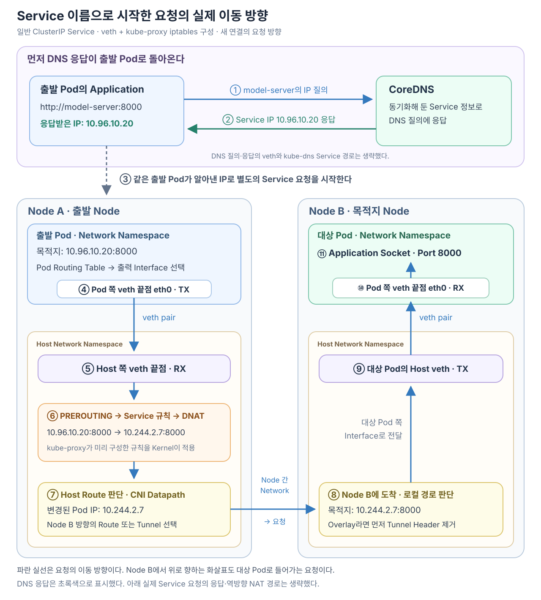

Node A의 Pod에서 다음 요청을 보낸다고 하자.
http://model-server:8000
Application이 알고 있는 것은 model-server라는 Service 이름뿐이다. 하지만 IP Packet의 목적지에는 도메인 문자열을 넣을 수 없다.
Application은 먼저 CoreDNS를 통해 Service 이름을 IP로 바꾼다. 그리고 응답받은 Service IP를 목적지로 실제 요청 Packet을 새로 만든다. 그 Packet은 Pod의 eth0과 veth를 통해 Host로 나오고, Host의 Netfilter에서 Endpoint Pod IP로 변환된 뒤 CNI Network 경로를 따라 대상 Node와 Pod에 도착한다.

예시에서는 다음 주소를 사용한다.
출발 Pod
Node A에서 실행
IP: 10.244.1.5
Service
이름: model-server
ClusterIP: 10.96.10.20
Port: 8000
대상 Pod
Node B에서 실행
IP: 10.244.2.7
Port: 8000
Network는 일반적인 veth 기반 CNI를 사용하고, Service는 kube-proxy의 iptables Mode로 구현됐다고 가정한다.
Pod는 CoreDNS에서 Service IP를 얻는다
Pod 안의 Application이 model-server에 연결하려면 먼저 이름을 IP 주소로 해석해야 한다.
Pod의 /etc/resolv.conf에는 DNS Server 주소와 Search Domain이 들어 있다.
nameserver 10.96.0.10
search default.svc.cluster.local svc.cluster.local cluster.local
Application이 model-server의 주소를 요청하면 이름 해석기는 Search Domain을 이용해 다음과 같은 전체 이름을 질의할 수 있다.
model-server.default.svc.cluster.local
CoreDNS의 kubernetes Plugin은 API Server의 Service 정보를 관찰해 DNS 응답 상태를 유지한다.
Service
이름: model-server
Namespace: default
ClusterIP: 10.96.10.20
CoreDNS는 일반 ClusterIP Service의 이름에 대해 Service ClusterIP를 응답한다.
model-server.default.svc.cluster.local
→ 10.96.10.20
이 단계에서 CoreDNS가 실제 Backend Pod 하나를 선택한 것은 아니다. Application이 사용할 안정적인 Service IP를 알려 준 것이다.
CoreDNS가 Service 정보를 동기화하는 과정은 CoreDNS는 Service 정보를 어떻게 알아내고 DNS 응답을 갱신할까?에서 자세히 살펴볼 수 있다.
Application은 얻은 Service IP로 실제 요청을 만든다
DNS 통신이 끝나면 Application은 응답받은 IP와 원래 URL의 Port로 별도의 연결을 시작한다.
목적지 IP: 10.96.10.20
목적지 Port: 8000
실제 Packet에는 model-server라는 도메인이 목적지 주소로 들어가지 않는다.
출발지: 10.244.1.5
목적지: 10.96.10.20:8000
도메인은 DNS 질의 단계에서 사용됐고, 이제부터 Network Stack은 목적지 IP를 기준으로 Packet을 처리한다.
Pod의 Routing Table이 eth0을 선택한다
Application이 Socket으로 Packet을 내보내면 Pod의 Linux Network Stack은 목적지 10.96.10.20에 대해 Routing Table을 조회한다.
목적지 10.96.10.20
→ Pod Routing Table 조회
→ 출력 Interface eth0 선택
Routing Table은 목적지 IP에 맞는 출력 Interface와 다음 경로를 결정한다. 이 단계에서 아직 실제 Endpoint Pod나 목적지 Node를 선택한 것은 아니다.
Packet의 목적지는 계속 Service IP다.
Packet은 Pod eth0과 veth를 통해 Host로 나간다
veth 기반 CNI 환경에서 Pod의 eth0은 veth pair의 한쪽 끝점이다. Peer인 반대쪽 끝점은 Host Network Namespace에 있다.
Pod Network Namespace
Application
↓
Routing Table
↓
eth0에서 TX
↓ veth pair
Host Network Namespace
Host 쪽 veth에서 RX
같은 Packet이 Pod의 eth0에서는 송신 Packet이고, Host 쪽 veth에서는 수신 Packet이 된다.
Pod eth0 관점
TX: 내보낸 Packet
Host veth 관점
RX: 전달받은 Packet
veth가 Packet을 Host Network Namespace에 넘기는 구체적인 과정은 Pod의 eth0에서 보낸 Packet은 어떻게 Host veth에 도착할까?에서 자세히 살펴볼 수 있다.
Host의 Netfilter가 Service IP 규칙을 적용한다
Host 쪽 veth에서 받은 Packet은 Host Network Stack의 입력 Packet이 된다.
일반적인 iptables Mode에서는 Packet이 Netfilter의 PREROUTING 처리 지점을 지난다.
Host veth에서 RX
→ Netfilter PREROUTING
Netfilter가 Kubernetes Service를 스스로 알고 있는 것은 아니다. 각 Node의 kube-proxy가 Service와 EndpointSlice를 관찰해 다음 정보를 Host의 Service 규칙에 반영해 둔다.
Service
ClusterIP: 10.96.10.20
Port: 8000
EndpointSlice
Endpoint:
IP: 10.244.2.7
Port: 8000
Ready: true
Node: node-b
규칙의 의미를 단순화하면 다음과 같다.
목적지가 10.96.10.20:8000이면
→ model-server의 사용 가능한 Endpoint 중 하나 선택
→ 선택한 Endpoint IP와 Port로 목적지를 변경
kube-proxy는 실제 Packet을 매번 직접 처리하지 않는다. kube-proxy가 규칙을 준비하고, 실제 Packet이 도착하면 Kernel의 Netfilter가 그 규칙을 적용한다.
이 규칙 안에서 Service IP가 식별되고 여러 Endpoint Chain 중 하나가 선택된 뒤 해당 Pod IP로 DNAT되는 구체적인 구조는 Service가 등록되면 kube-proxy는 DNAT Chain을 어떻게 만들까?에서 자세히 살펴본다.
Netfilter가 Service IP를 Endpoint Pod IP로 DNAT한다
이번 연결에서는 Endpoint 10.244.2.7:8000이 선택됐다고 하자.
Netfilter는 Packet의 목적지 주소를 바꾼다.
변경 전
출발지: 10.244.1.5
목적지: 10.96.10.20:8000
변경 후
출발지: 10.244.1.5
목적지: 10.244.2.7:8000
이 목적지 주소 변환이 DNAT다.
Service ClusterIP
→ 실제 Endpoint Pod IP
DNAT가 목적지를 Node B의 Node IP로 바꾼 것은 아니다. 목적지는 실제 Pod IP인 10.244.2.7이다.
Netfilter Hook과 kube-proxy 규칙의 관계는 Netfilter는 무엇이고 패킷의 어느 지점에서 동작할까?에서 자세히 살펴볼 수 있다.
Host는 변경된 Pod IP를 기준으로 Route를 찾는다
DNAT가 끝나면 Host Kernel은 변경된 목적지 IP를 기준으로 Routing Table을 조회한다.
목적지: 10.244.2.7
↓
Host Routing Table 조회
iptables가 Pod IP를 검색해 어느 Node에 있는지 알아내는 것이 아니다.
iptables Service 규칙
Service IP → Endpoint Pod IP
Linux Routing Table·CNI Datapath
Endpoint Pod IP → 그 IP까지의 실제 경로
여기서 Routing Table은 목적지 IP를 보고 최종 목적지 자체가 아니라 다음 Hop과 내보낼 Network Interface를 선택한다. DNAT로 목적지가 바뀐 뒤 어떤 Route가 선택되고, 그 결과 같은 Node의 Pod나 다른 Node로 어떻게 이어지는지는 Routing Table은 목적지 IP의 다음 경로를 어떻게 선택할까?에서 자세히 살펴본다.
CNI Network가 다음과 같은 경로를 준비해 두었다고 하자.
10.244.1.0/24
→ Node A의 Pod 대역
10.244.2.0/24
→ Node B의 Pod 대역
목적지 10.244.2.7은 10.244.2.0/24 경로와 일치한다.
10.244.2.7
→ 10.244.2.0/24 Route와 일치
→ Node B 방향의 Route 또는 Tunnel 선택
CNI Network가 Packet을 Node B로 운반한다
Node A의 Host는 CNI가 준비한 Route나 Tunnel을 이용해 Packet을 Node B로 전달한다.
Node A
→ 목적지 Pod IP 10.244.2.7
→ Node B 방향의 Route 또는 Tunnel
→ 물리 Network
→ Node B
Overlay Network를 사용하는 경우에는 원래 Pod Packet을 Node 간 전달용 Packet 안에 넣을 수 있다.
안쪽 원래 Packet
출발지: 10.244.1.5
목적지: 10.244.2.7
바깥쪽 Tunnel Packet
출발지: Node A IP
목적지: Node B IP
Service DNAT가 Node B IP를 선택한 것이 아니다. CNI Datapath가 Pod IP까지의 경로를 구현하면서 Node B의 주소를 Node 간 운반에 사용할 수 있는 것이다.
CNI가 같은 Node와 다른 Node의 경로를 준비하는 방법은 CNI는 Pod의 veth·IP·Route와 Node 간 경로를 어떻게 준비할까?에서 이어서 볼 수 있다.
Node B가 Packet을 대상 Pod의 eth0으로 전달한다
Node B에 Packet이 도착하면 Overlay를 사용한 경우 바깥쪽 Tunnel Header를 제거한다. 그러면 원래 목적지 Pod IP가 다시 처리 대상이 된다.
Node B
→ 목적지 10.244.2.7 확인
→ 로컬 Pod Route 선택
→ 대상 Pod의 Host 쪽 veth에서 TX
→ veth pair
→ 대상 Pod eth0에서 RX
대상 Pod의 Network Stack은 목적지 Port 8000에 연결된 Socket을 찾고 Application에 데이터를 전달한다.
대상 Pod eth0
→ Pod Network Stack
→ TCP Port 8000
→ Application Socket
이제 model-server Application에 요청이 도착한다.
같은 Node의 Pod라면 Node 사이 Network는 생략된다
선택된 Endpoint Pod가 출발 Pod와 같은 Node에 있다면 Node 간 Route나 Tunnel을 사용할 필요가 없다.
출발 Pod eth0
→ 출발 Host veth
→ Service IP를 대상 Pod IP로 DNAT
→ Host의 로컬 Route
→ 대상 Host veth
→ 대상 Pod eth0
같은 Node와 다른 Node 모두 Service 규칙이 목적지를 실제 Pod IP로 바꾼다는 점은 같다. 변경된 Pod IP에 대한 Route가 로컬인지 원격인지에 따라 이후 경로가 달라진다.
DNS 질의와 실제 요청은 별개의 통신이다
도메인으로 시작한 요청에는 두 개의 Network 통신이 등장할 수 있다.
첫 번째 통신: DNS 질의
Pod
→ kube-dns Service IP
→ CoreDNS Pod
← model-server의 Service IP
두 번째 통신: 실제 요청
Pod
→ model-server Service IP
→ Endpoint Pod IP로 DNAT
→ CNI Network 경로
→ 대상 Pod
DNS Cache에 유효한 결과가 있다면 첫 번째 Network 통신은 생략될 수 있다. 하지만 실제 Application Packet의 목적지가 도메인이 아니라 IP라는 원칙은 변하지 않는다.
전체 요청을 다시 연결한다
Application이 Service 도메인 사용
↓
CoreDNS에 DNS 질의
↓
Service ClusterIP 획득
↓
Application이 Service IP로 Packet 생성
↓
Pod Routing Table
↓
Pod eth0
↓ veth pair
출발 Node의 Host Network
↓
Netfilter PREROUTING
↓ kube-proxy가 준비한 Service 규칙
Service IP를 Endpoint Pod IP로 DNAT
↓
Host Routing Table·CNI Datapath
↓
Node B로 전달
↓
Node B의 대상 Host veth
↓ veth pair
대상 Pod eth0
↓
Application
각 구성요소의 역할을 한 줄로 구분하면 다음과 같다.
CoreDNS
도메인 → Service IP
kube-proxy
Service와 EndpointSlice를 관찰
→ Host에 Service 규칙 준비
Netfilter·iptables 규칙
Service IP → Endpoint Pod IP
Routing Table·CNI Network
Endpoint Pod IP → 실제 대상 Node와 Pod
veth pair
Pod Network Namespace ↔ Host Network Namespace 연결
핵심은 Host가 도메인을 보고 목적지 Node를 결정하는 것이 아니라는 점이다. CoreDNS가 도메인을 Service IP로 바꾼 뒤, Host의 Netfilter가 Service IP를 Endpoint Pod IP로 변경하고, Routing Table과 CNI가 그 Pod IP까지의 실제 경로를 선택한다.
Cilium 같은 eBPF 기반 Service 구현이나 veth를 사용하지 않는 CNI에서는 Packet을 가로채는 위치와 Datapath가 달라질 수 있다. 이 글은 veth와 kube-proxy iptables 구성을 기준으로 한 흐름이다.